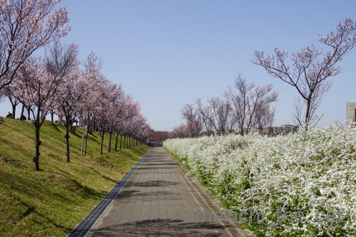
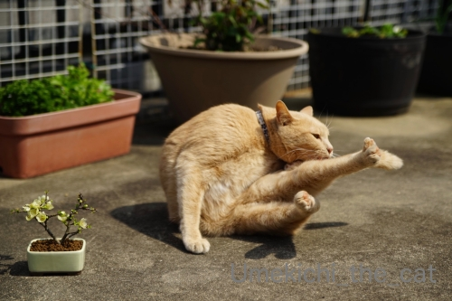
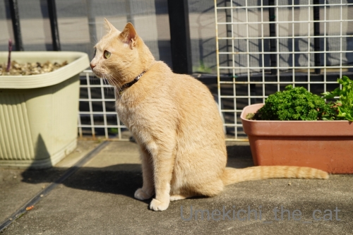
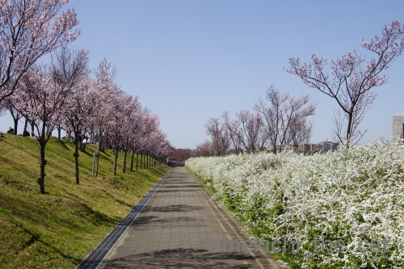
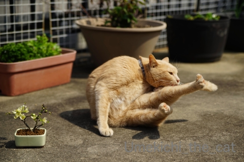
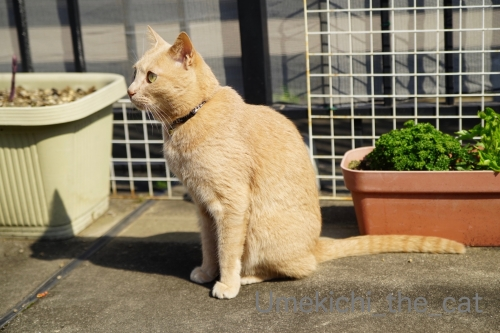

お花見はじめはコシノヒガンから [梅吉]
3月21日、今年も早咲きのコシノヒガンを見に行ってきました。

３連休が始まる前、大阪のソメイヨシノの開花予想は23日からの週のいずれかの日、
と言われていました。
それなら早咲きの桜はすでに満開でしょう？と思って出かけたのですが・・・・・


ユキヤナギは凶暴なくらい咲き誇ってましたが桜は全然満開じゃなかったですw
出かけたのは大阪府内狭山市にある狭山池公園。
日本最古と言われる大きなため池の周りに桜が植えられているのですが
水面を渡る冷たい風が吹き付ける場所にある木は咲くのが遅い模様。
品種や環境もそれぞれの桜の開花を読むのは本当に難しい＞＜


でも！見る位置を変えたら見応え十分。
桜を愛でながら持参したお寿司を楽しんできました＾＾
人出もそこそこで快適なお花見でした。
ここは提灯を下げたり音楽を流したりしないのが最高です。
もちろんBBQで宴会する様な人もいません。
お花見は静かにしたいです(^_－)☆
＊＊＊＊＊＊＊＊＊＊＊＊＊＊＊＊＊＊＊＊＊＊＊＊＊＊＊＊＊＊＊＊＊＊＊＊
梅吉さんもベランダでお花見です。

ユキヤナギを楽しみ・・・お、これは香を聞く「道」でもありますね＾＾

長寿梅（ボケの一種です）と梅梅ツーショット。

と思ったらここでも「道」。
毛繕いも「道」なんだとつい最近すももちゃんに教えてもらいました( ´艸｀)
梅吉は足を上げる流派の様ですwww

プランター菜園の管理にも尽力していらっしゃいます＾＾
後ろ右は玉ねぎ。左はいちご。
いちごは小さな実がなり始めてます。

忙しい梅吉さんw
右後ろはパセリと三つ葉。
パセリって不味いものと思っていましたが
採りたてはパサパサしていないしエグくなくて美味しいのです。
左は紫アスパラです。

ぐんぐん伸びてます！
すでに５、６本収穫しました。甘くて本当に美味しい。
買ったアスパラの味がことさら薄く感じます。
前記事でちらりと書いたベランダのプチリフォーム。
梅吉の後ろに写っている白い脱走防止ガードを付け替えること。
変色して写真に写るたび美しくない・・・と思っていたので
黒いガードに付け替えることにしました。
急ぐことでもないのですが夏の灼熱地獄になる前に済ませたいです(≧▽≦)
 ↑ガブッと一押し↑
↑ガブッと一押し↑
３連休が始まる前、大阪のソメイヨシノの開花予想は23日からの週のいずれかの日、
と言われていました。
それなら早咲きの桜はすでに満開でしょう？と思って出かけたのですが・・・・・

ユキヤナギは凶暴なくらい咲き誇ってましたが桜は全然満開じゃなかったですw
出かけたのは大阪府内狭山市にある狭山池公園。
日本最古と言われる大きなため池の周りに桜が植えられているのですが
水面を渡る冷たい風が吹き付ける場所にある木は咲くのが遅い模様。
品種や環境もそれぞれの桜の開花を読むのは本当に難しい＞＜
でも！見る位置を変えたら見応え十分。
桜を愛でながら持参したお寿司を楽しんできました＾＾
人出もそこそこで快適なお花見でした。
ここは提灯を下げたり音楽を流したりしないのが最高です。
もちろんBBQで宴会する様な人もいません。
お花見は静かにしたいです(^_－)☆
＊＊＊＊＊＊＊＊＊＊＊＊＊＊＊＊＊＊＊＊＊＊＊＊＊＊＊＊＊＊＊＊＊＊＊＊
梅吉さんもベランダでお花見です。
ユキヤナギを楽しみ・・・お、これは香を聞く「道」でもありますね＾＾
長寿梅（ボケの一種です）と梅梅ツーショット。

と思ったらここでも「道」。
毛繕いも「道」なんだとつい最近すももちゃんに教えてもらいました( ´艸｀)
梅吉は足を上げる流派の様ですwww
プランター菜園の管理にも尽力していらっしゃいます＾＾
後ろ右は玉ねぎ。左はいちご。
いちごは小さな実がなり始めてます。

忙しい梅吉さんw
右後ろはパセリと三つ葉。
パセリって不味いものと思っていましたが
採りたてはパサパサしていないしエグくなくて美味しいのです。
左は紫アスパラです。
ぐんぐん伸びてます！
すでに５、６本収穫しました。甘くて本当に美味しい。
買ったアスパラの味がことさら薄く感じます。
前記事でちらりと書いたベランダのプチリフォーム。
梅吉の後ろに写っている白い脱走防止ガードを付け替えること。
変色して写真に写るたび美しくない・・・と思っていたので
黒いガードに付け替えることにしました。
急ぐことでもないのですが夏の灼熱地獄になる前に済ませたいです(≧▽≦)

カフェオレ色の梅吉

梅吉 2023年8月10日 永眠


梅吉と出会った譲渡会

犬猫の理由なき殺処分ゼロ
妄想広告
UMEKICHI 光

爆発的に早い！
時々攻撃的！
Thanks to Mr.Boss365
爆発的に早い！
時々攻撃的！
Thanks to Mr.Boss365

私も宴会なしのお花見の方が好きです。
ベランダ菜園色々植えてらっしゃいますね。良いな~。
私は水やりが大変でもう増やせない状態なのです。
by zombiekong (2020-03-26 01:59)
満開じゃなくても十分綺麗ですよ＾＾
by ぽちの輔 (2020-03-26 06:35)
桜よりユキヤナギが目立ってますな（ﾟ□ﾟ）
こっちは自粛モードですが、昨日の夜に井の頭公園で花見の宴会をしてた人が結構居たらしい？（ﾟ□ﾟ）
梅吉さんはベランダでお花見か～いいニャ。
アスパラって昔は観賞用だったらしいね。
何を観賞するのやら？
by 英ちゃん (2020-03-26 06:55)
桜並木、ビューティホーですね*\(^o^)/*
アルコール宴会の花見はとっても賑やかすぎるので
いつもアルコール禁止の新宿御苑に行ってましたが
今年は宴会自粛と聞いて、「狙ってた花見場所に行こう！」と
かみさんと計画してたのに、まさかの週末雨予報( ；´Д｀)
梅吉さん、どんな花も似合うイケメンさんですねぇ=(^.^)=
by ニッキー (2020-03-26 07:24)
ユキヤナギ、すごい！
うちのほうも今はユキヤナギがすごいことになっているよー
桜の見頃って本当に難しいよね。
でもすごく綺麗^^
紫アスパラのびてるねえ。これはとれたてだもの、間違いなく美味しいよ！
いいなーいいなー
わたしもこういうの育てる意欲があるといいのに、と、自分で思うよ(笑)
まずはカブトムシの幼虫ちゃんが無事で居ることを祈っております。
土の中で生きてるのかなあ・・・
毛繕い、あおも足を上げるタイプかも。うみは、あまり毛繕いしてないｗｗ
by リュカ (2020-03-26 09:47)
ユキヤナギってすごく主張しているお花ですよね。
一つ一つのお花はとても可憐なのに束になってかかってこ～い！な
先っぷりが激しいというか。狂暴という表現がしっくりきます。
桜の下でビニールシートを広げた宴をしたことがないのですが、
地面にシートだけだとオチリが冷えそうで長時間は座っていられない気がします。
紫のアスパラ初めて見たｗ 食べたことはもちろんございません。
味は色によって違うのかしら？先日スーパーでホワイトアスパラが売ってました。缶詰でないホワイトさんを見たのも初めてだったのでちょっと感動。
金麦のCMで石原さとみさんがグリーンアスパラにマヨがかかったやつを
ガブっとかじっているのが美味しそうです。
たいていお店のグリーンアスパラは筋ばっているのでピーラーでひと皮削ったりします。もぎたてパセリも味わったことがないなｗ
by marimo (2020-03-26 10:11)
こちらの桜並木も、古くて枯れてしまったり、傷みがひどい木は伐採して、コシノヒガンに植え替えられたのですが、大きさが小さし、色が少し濃いので、統一感がなくなってちょっと悲しいです。コシノヒガン自体はピンクが濃くてカワイイお花だなーって思うのですが。
ユキヤナギが狂暴！爆！爆！ほんっとそんな感じですよねー。
前職では、最初の数年いた事業所とその次の事業所は、職場で花見やってました。これはこれで面白かったんですけど、ま、花なんて見てなかったですね。その次の事業所は事業所内で花見ができて、お花見の日があったのですが、これはパスしてた(-_-;) (この事業所はノリが悪くてつまらなかったの)
国立市の大学通りは、植込みに入ってのお花見は禁止なのですが、毎年やってるバカ共がいます。さすがに今年は見かけないな。街路樹が多いので、あまりお花見は見かけません。
紫アスパラ！そんな色のもあるのですね。初めて見ました。
うちは本格的にベランダガーデニングを片付けねば‥‥。
by ChatBleu (2020-03-26 10:46)
梅吉さんはベランダでお花見ですね！
外は気持ち良さそうですね。
by ma2ma2 (2020-03-26 10:55)
ピンクと白のコラボ！素敵です♪
騒がしさもなく、ゆっくりと見れるのはいいですね(#^.^#)
梅吉さん！ベランダを満喫♪
ピーンと伸ばしたアンヨがまた可愛いです！
by きぃ (2020-03-26 12:02)
凶暴なユキヤナギに激しく同意(#^^#)
満開になって四方八方好きな方に触手を伸ばして風にゆっさゆっさ揺れる様子は、エイリアンみたいでちょっと怖いです。
私も酒飲みですが桜は静かに愛でたい派。
ブルーシートを敷き詰めてカラオケなどされたら興ざめもいいところ。
狭山池の桜、お写真では十分に美しいですよ！
ベランダ陽だまりの梅吉さん、お花をガジガジやらないのが賢い^^
木瓜の鉢植えを店先で見かけるたびに欲しいな～と思うのですがウチは場所がなくて残念・・・。
いちご狩りを自宅で、いいな～いいな～♪
by ゆきち (2020-03-26 12:33)
こんにちは。
狭山池公園のコシノヒガン、見事に咲いていますね。
凶暴なユキヤナギ？さんと良いコンビネーションの風景写真です。
「持参したお寿司」で長閑で寛いだ花見を堪能ですね。
梅吉君も「道」を堪能？してますね。
毛繕いも「道」です（笑）それにしても「足をつりそうな」いい角度？新技ですね（爆）
「プランター菜園」は実益もあり、苺は楽しみですね。
「紫アスパラ」は凄い！！来年栽培してみようかな？サカタのタネ？
「白い脱走防止ガード」小生は気になりませんが・・・
中止のオリンピック期間中に楽しみながらプチリフォームです！？(=^･ｪ･^=)
by Boss365 (2020-03-26 12:59)
確かに、提灯や音楽とか人工的なのが無い方が素敵かも。
ユキヤナギの「凶暴なくらい咲き誇る」という表現が笑えます～。
「毛繕い道」極めてますな～！まさに梅梅ツーショット！
by よーちゃん (2020-03-26 13:13)
見事な光景ですね～！
印象派の画家さんに描いてもらいたいような。
この雪柳は狂暴～！言えてます^o^
ベランダの梅吉さん、日にあたって気持ちよさそう！
プランターに新鮮なお野菜いいですねえ。私は植木鉢やプランターのは全部だめにしたのでやめてます^^;
アスパラはいぜん葉の観賞用（というか花の添え物用）に植えたものに、細～い芽が出てきたとき、食べると美味しかったです^^
by sana (2020-03-26 14:08)
こんにちは！
カメラ目線でポーズする梅吉ちゃん可愛いですね（"＾ω＾）・・・
by Take-Zee (2020-03-26 16:09)
梅吉さん、しっかりポーズとってます。お利口ですね(^_^)
こちらの桜の開花は来月の中旬以降ですが、シートを敷いた宴会は大丈夫だそうです。自粛ムードはまるで無し、大丈夫でしょうか・・・(^_^;)
by kou (2020-03-26 16:20)
今年は意外と桜の開花が遅いですね。
今シーズンはBBQの牛肉を焼く匂いがしない（かもしれない）のはいいことかも。
暖かい日差しの中、梅吉さんもお花見！！
植木鉢が小さいのか、はたまた梅吉さんがメチャでかいのか。。。^^;
見事な「道」ですね！
その手前に左の鉢を置いたら「導」になるかも。^^)
by yes_hama (2020-03-26 21:39)
狭山池公園は行ったことありませんが綺麗な公園ですね♪
桜を愛でながら持参したお寿司とはなんて優雅な～
と思ったらお寿司の写真がない！
見たかったですがきっと美味しすぎて写真撮り忘れたのでしょう(笑)
梅吉さんも日向ぼっこで気持ち良さそう～
紫アスパラは食べきれないほど余ってませんか|дﾟ)ﾁﾗ
by yamatonosuke (2020-03-27 01:40)
ユキヤナギが凶暴ｗｗ
ご存じかと思いますが
アスパラは取りすぎると翌年の収穫に響きます。
姑（故人）がほとんど収穫してしまって＾＾；
何年ももたずに消えました。
数本を残して、大きく育てて株を太らせるのが
数年間、収穫するコツだそうです。
by サンダーソニア (2020-03-27 11:01)
こんにちは。
ご連絡遅れましたが、アスパラ情報ありがとうです。
苗ものみたいですね。ネットで探したらありました。
また「一度植えたら数年楽しめる」のコピーあり？
先ずは、近所のホームセンターで探して・・・
なければネットでポチる感じです！？(=^･ｪ･^=)
by Boss365 (2020-03-27 17:27)
ジャイアンツの練習場があったのはもっと下流です。
田園調布の近くです。
by 英ちゃん (2020-03-27 17:34)
両足を横に上げた梅吉さんのポーズ、バランス感覚の良さ、見事ですね＾＾。
細めた目も愛らしくて。
by Inatimy (2020-03-28 00:25)
うちも猫たちを写真に撮った時写り込んだ背景に「ここはもっときれいにしよう」とプチリフォームしています(;^ω^)
by palpal (2020-03-28 08:48)
梅吉さん、管理お疲れ様です^^
by ニコニコファイト (2020-03-28 09:53)
おぉ、なんと美しい桜＆雪柳ロード♪
ここは、もともと提灯も宴会もなし?! いいなぁ、お花見は静かな方がええです♪
梅吉さんも、静かに「道」を究めながら、春を愛でていらっしゃいますね(^.^)
by のらん (2020-03-28 12:26)
梅吉さんと植物のツーショットはいつもなかなか
しっくりきてますね～！(o´∀`)ﾉ☆･:*
by yuppie (2020-03-28 13:55)
ユキヤナギ見事です
もう少し経って散るときもきれいだろうな～
梅吉君、お花を携えて良い男っぷりを発揮してますね
苺の鉢の横、笑顔にみえて可愛い～
こんなキュートな表情ずるいな～
by 藤並 香衣 (2020-03-28 20:54)
梅梅ツーショット、どちらもかわいいです。
紫アスパラ、面白い！
甘いんですね。いいなぁ。
by ふにゃいの (2020-03-28 21:18)
きれいな公園ですね〜
気兼ねせず、のんびりと散歩できる日が早く来てほしいものです。
お身体にお気をつけください!
by 小松達也 (2020-03-29 15:26)
これはヨシノちゃんじゃない桜ですね♪
ユキヤナギの白とのコントラストがステキっ(*ﾉωﾉ)ｷｬｰ
宴会はしなくていいから、桜を見に行きたいw
でも人混みになっちゃうかもしれないから、車窓から＾＾
つまらない春になってしまいましたね(ﾉω･、)ｸｽﾝ…
梅ちゃんはベランダでお花見❤︎それはいいですね！！
かわいいツーショットです(*´ -`)(´- `*)
うちは「おんも行きたいw」と訴えていますが
ママ上に、風が強いからとか寒いから、とか理由を
つけられて監禁されておりますww
by カトリーヌ (2020-04-01 21:50)